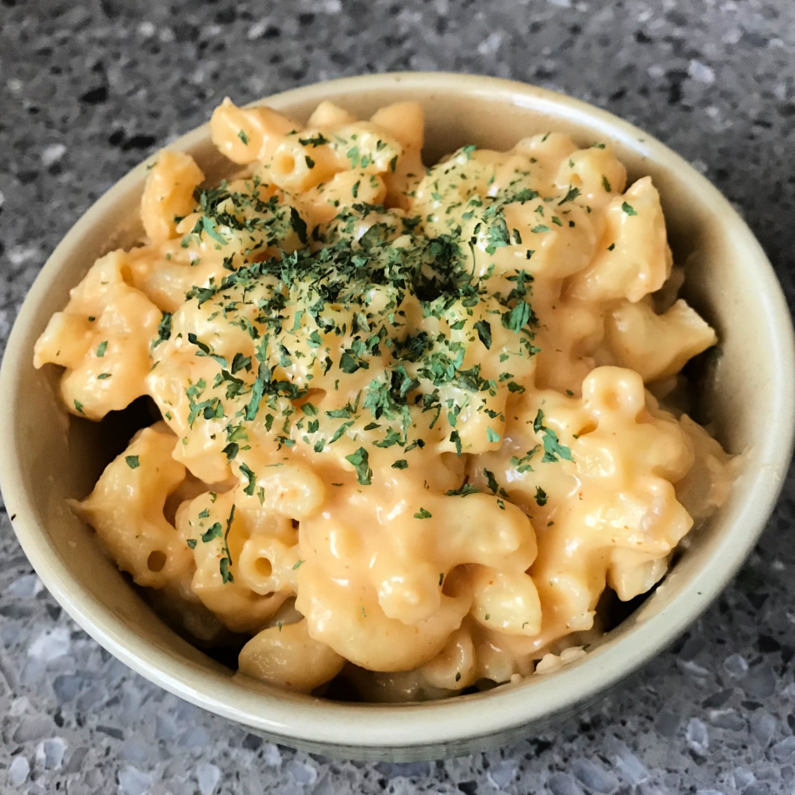

Mac and Cheese

Description
A very cheesy and yummy meal!
Ingredients
ground black pepper to taste
Steps
Boil water in salted water
Add macaroni in water, until Al dente
Melt butter in saucepan, stir in flour to create roux
slowly pour milk into roux
Add cheese to mixture and stir until melted
Fold noodles into cheese sauce until coated